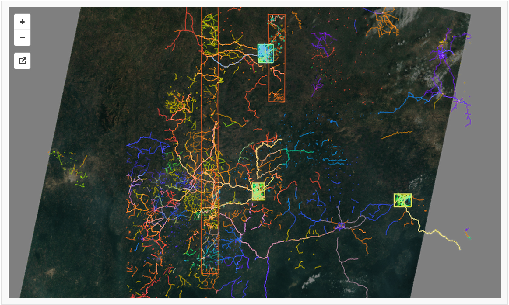
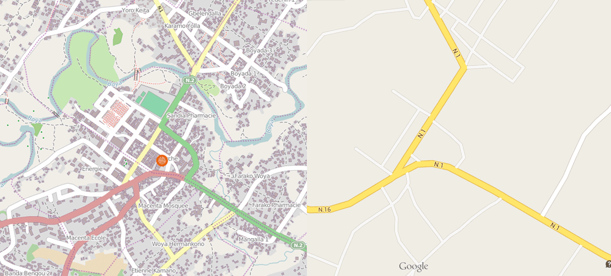

OpenStreetMap
Traditional Humanitarian Responders, HOT, & the OSM Community
community + open data + imagery =
29 hours for 68 volunteers to map an entire city
(20,105 buildings)
5 days for almost 200 volunteers to map 100,000+ buildings & hundreds of kilometers of roads


Why not just use Google Maps?
Administrative Boundaries
7 provinces, 264 maps
Staff Tracker
Cash Surge Team
Staff Tracker
American Red Cross
Program Progress
Red Cross Red Crescent Movement Cash Grant Support
Program Targeting
Visualizing Damages and Vulnerability
Program Targeting
Visualizing Plans
Visualizations for Reports
Online Resources
Mapfolio & Webviz